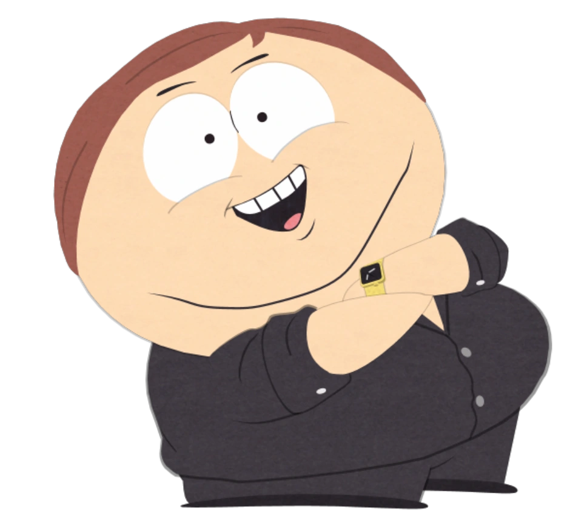
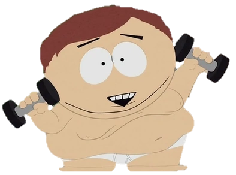

Generally

Eric Theodore Cartman, usually referred to as just Cartman, is one of the main characters, along with Stan Marsh, Kyle Broflovski, and Kenny McCormick. Cartman is sometimes the main antagonist of an episode, for example "Trapper Keeper". None of the other three main children really consider Cartman their friend and do not know why they started hanging out with him in the first place, but a certain form of unstable friendship ends up being born between them. However he is usually Kyle's first choice when he breaks his friendship with Stan. In earlier episodes, Kenny was his best friend, however, in later seasons, Butters Stotch is usually depicted as such.
Cartman was the first one of the boys to be shown without his hat, as seen in "Merry Christmas Charlie Manson!". He also weighs 90 pounds, as revealed in "Weight Gain 4000".
Appearance
Cartman wears a red jacket, yellow mittens, a blue hat with a yellow puff ball on top, brown pants, black shoes, and white socks (as seen in "Super Fun Time"). He sometimes wears a green t-shirt with a bear picture on under his jacket, a white tank top, and occasionally a dark red t-shirt. He has medium-brown hair and a double-chin. He also has triangular-shaped eyebrows, in contrast to the other main boys' rectangular ones. Even though Cartman is overweight, he always denies it (especially in the earlier seasons) by saying, "I'm not fat, I'm just big-boned", or some variation thereof. However, as seen in "Merry Christmas Charlie Manson!" and "Cartmanland", his weight problem may be, in truth, be genetic and runs in the family, as seen by the fact that, with the exception of his mother an aunt, and a cousin, his entire family is extremely overweight. But in "Fat Camp", when he tells his mother to talk about how he is big boned and such, she instead says, "Those were all lies, sweetie, you're just fat." In "Tsst", he is slightly thinner, although in later episodes, he was shown to have regained the lost weight. Cartman likely has blue irises, as, due to the events of "The Succubus", he has Kenny's eyes, which were shown with blue in "Starvin' Marvin". In Season Twenty, he wears a t-shirt with the words "Token's Life Matters".
In the future timeline set in South Park: Post Covid, Cartman is supposedly converted into Judaism. He wears a dark gray suit with black tie and white shirt, along with a pair of round glasses. His yarmulke resembles the blue hat with yellow puff that he wears in childhood.
Personality
Cartman is described in various terms, in short, he is an evil, vicious, angry, self-absorbed, immature, destructive, sarcastic, snooty, loud-mouthed, lazy, and insane child. He is the most foul-mouthed character in the show. He is also racist and stereotypes almost everyone he sees. The very dark, usually disturbing undertones to his personality often hint at an extreme mental imbalance. Apart from being portrayed as having a general lack of moral responsibility or social conscience, he also seems to take pleasure from others' misfortune and is generally unable to show empathy, although there have been exceptions, such as in "How to Eat with Your Butt." Despite the severity of his actions, it is likely that they are a type of emotional defense mechanism against his insecurity and (potential) confused sexuality. This "defense", however, does not seem to be impenetrable, as evidenced by "1%". This has been parodied as well, in the cliché of a typical villain becoming benevolent. In these episodes, he usually convinces Kyle that he has good intentions, such as in the "Cartoon Wars" two-parter, where Cartman appears to Kyle that he is concerned about people's safety at the beginning, but it is later shown to only have been doing it to get Family Guy off the air. In the "Do the Handicapped Go to Hell?" and "Probably" two-parter, Kyle and many others fall for Cartman's apparently "good intentions" for trying to prevent the children of South Park from going to hell. However, it is revealed that he only did it so he could earn money. In "Kenny Dies", he is distraught at Kenny's impending death leading Kyle to console him. Later when his supposedly real motives were revealed, knowing how Cartman typically is, Kyle promptly fights him in Kenny's defense, although Cartman was genuinely distraught over Kenny's illness before and after he learns that he can benefit from it. This clearly shows that Cartman went through Congress for Kenny and reveals that he does not have a healthy way of dealing with the death of his friend.
Cartman can, on rare occasions, show compassion towards cats, as in "Major Boobage" in which he hides cats in his attic from the authorities. This compassion hints that he has not progressed to be a full sociopath.F
In "The Death of Eric Cartman", Kyle sums up Cartman's character as a "fat, racist, self-centered, intolerant, manipulative sociopath".
He has been shown to harass and bully people at his school, and, as a result, many people in the show despise him. Cartman, however, does not consider himself to be a bully who likes to pick on other people to pleasure himself; in fact, he seems to disregard good or bad altogether (or perhaps simply does not have a concept of it) and does whatever he feels necessary for him to get ahead. Cartman seems to be motivated not so much by personal gain as by asserting superiority over others. In "Red Hot Catholic Love", he won $20 in a bet with Kyle, but, instead of using the money, he simply kept flaunting it in front of Kyle until Kyle conceded that Cartman was right, ruining his sense of victory and causing him to throw a tantrum (and apparently even abandon the money and having it given back to Kyle). The same thing happens in "Christian Rock Hard": Kyle makes a $10 bet that he can get a platinum album before Cartman, Cartman makes a successful album and makes millions of dollars and earning the album. But, when Cartman wins a myrrh album and discovers that the Christian companies do not give out platinum albums (Christ did not believe in such things, the albums stem from the gifts of the three wise men; they give out gold, frankincense, and myrrh albums), thus meaning he cannot win the bet, he angrily destroys the myrrh album, showing that he did not care how he just made millions of dollars, he just wanted to beat Kyle in a bet.
Cartman's much quoted line, "Respect my authority" (or as Cartman pronounces it, "respect mah authori-tah") highlights his power hungry and dictatorial characteristics. Despite these traits, Cartman rarely commands respect from his peers. Cartman's friendships with the other kids are clearly existent, but just not shown as much because of his personality.
Ironically, despite (or perhaps because of) these qualities, Cartman also seems to be a natural leader, able to utilize overwhelming charisma and rhetoric to gain the obedience of large groups on a moment's notice (as in "The Passion of the Jew"), appearing to be innately aware of how to take advantage of "mob mentality" and direct it toward accomplishing his personal goals, as has been evidenced in countless episodes throughout the series' history. In situations where the other boys share his goals, Cartman is often the de facto leader (e.g. "Make Love, Not Warcraft", "The List", and "Marjorine"). Indeed, the others consistently show a willingness to follow him and trust in his leadership when he is using his abilities for "good."
Cartman also seems to share many of the shows creators' (Trey Parker and Matt Stone) more controversial opinions, despite both of them modeling Stan and Kyle after themselves. Examples of this include an extremely strong dislike for Family Guy for its lack of character development, plot, or smart humor. Other examples include Cartman's strong distaste of hippies, to the point that he has personally kept them out of South Park since he was 4 years old, and his belittlement of the Catholic Church as extremist, homophobic, and a supporter of pedophiles (in "Medicinal Fried Chicken"). He also considers John Lennon to be the "king of hippies".
Greed
A defining arc during the show's fourth season was Cartman's single-minded quest to make 10 million dollars. The schemes he has tried include; becoming a part of the Denver "tooth racket"; and stealing Tooth Fairy money from kids, starting a boy band called Fingerbang, and forming his own church and embezzling its collection money These all failed miserably for several reasons. He also tried at it in the episode "Cherokee Hair Tampons" when Kyle's kidneys were failing and Cartman, being the only one with Kyle's blood type, demanded a payment of 10 million dollars when Stan begged him to let Kyle have his kidney. He has also tried to sell a crashed truck-load of aborted fetuses to the highest-bidding stem cell research center, and even to a restaurant as food. In "Up the Down Steroid", Cartman had also pretended he was retarded to compete in the Special Olympics and win $1000. The reasons for this are never fully explained, although in one episode "Cartmanland", after inheriting a million dollars from his grandmother, he reveals that he wishes to buy his own amusement park so he would not have to wait in lines for the rides. He also stated that it has been his dream to own a million dollars since he was two years old. In "Two Days Before the Day After Tomorrow", he threatens Kyle with a gun for his "Jew Gold". In "ManBearPig" Cartman stumbles upon a pile of treasure while the boys are trapped in a system of caves. Afraid that the others might find the treasure and demand a share, Cartman decides to swallow as many of the coins and jewels as he can, causing him to become extremely bloated and unable to walk or swim on his own. Later in the episode it is revealed, during the process of painfully crapping it out, that the treasure is fake and used for photographs for tourists at the caves. He is miserably and completely scrooged, determined not to give up the slightest amount of money, such as refusing to give a dollar to Afghan children in "Osama bin Laden Has Farty Pants", "I'm not giving a dollar to those towel-heads!" Craig Tucker observed in "Fishsticks" that Jimmy was lucky Cartman was only asking for half the money that would be made from patenting a joke that Jimmy had come up with, and Cartman was intent on taking credit for (he had actually lied on the couch eating chips, offering no input).
Sport
Cartman has been bad at sports, and sometimes good. He has been seen playing center in Football in "Big Gay Al's Big Gay Boat Ride" and on the Dodge-Ball team in the episode "Conjoined Fetus Lady". He plays Baseball, as he is seen hitting a home run and plays catcher on the Baseball team, as seen as one of the three players (Stan, Kyle, and Cartman) hitting a home run in "The Losing Edge".
In "Grey Dawn" he is seen playing street hockey along with the rest of the boys as a goalie. In later episodes "ManBearPig" and "Guitar Queer-O", Cartman is seen to be playing basketball with the other boys, however he is not nearly as talented as he seems to think or the others. He often cries out 'Stop cheating you black asshole!' when an opponent beats him, or 'You tricked me!' as if this was illegal. However, Cartman seems to have a grasp of cheating strategies (as seen in "Eek, A Penis!".) Cartman tries out for the wrestling team in "W.T.F.", but leaves after he is put into a "gay" move by Butters, who was told by the teacher to do so. In the same episode he formed a wrestling league along with some of the other boys. However, the wrestling in which they performed was more dramatic theater in which they created complicated in depth story lines for their wrestling personas, rather than actual athletic prowess.
Cartman is also seen as a not very good swimmer in "Summer Sucks". Cartman is upstaged by handicapped children in "Up the Down Steroid", where his elaborate plan to beat the handicapped children in athletics backfires, with him placing dead last in every sport. In "1%", he performed so poorly on the school's gym athletics test that it brought the school's average down to the worst in the country.